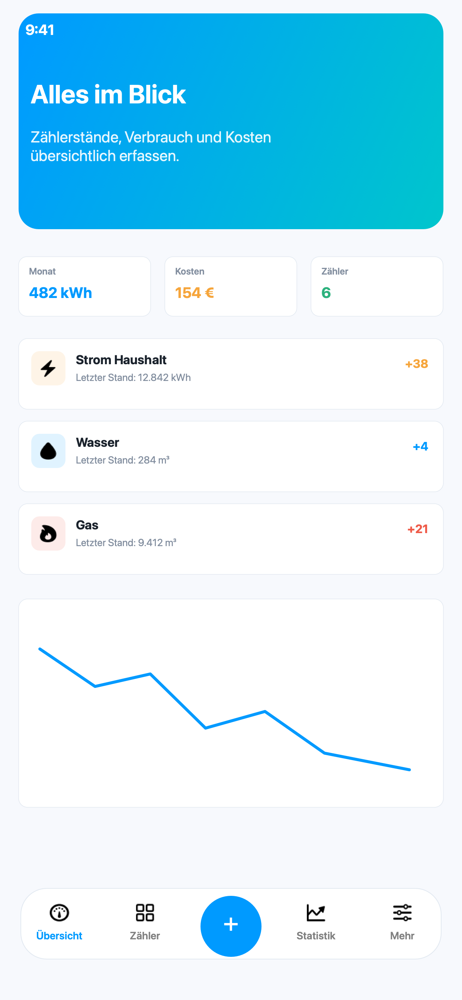
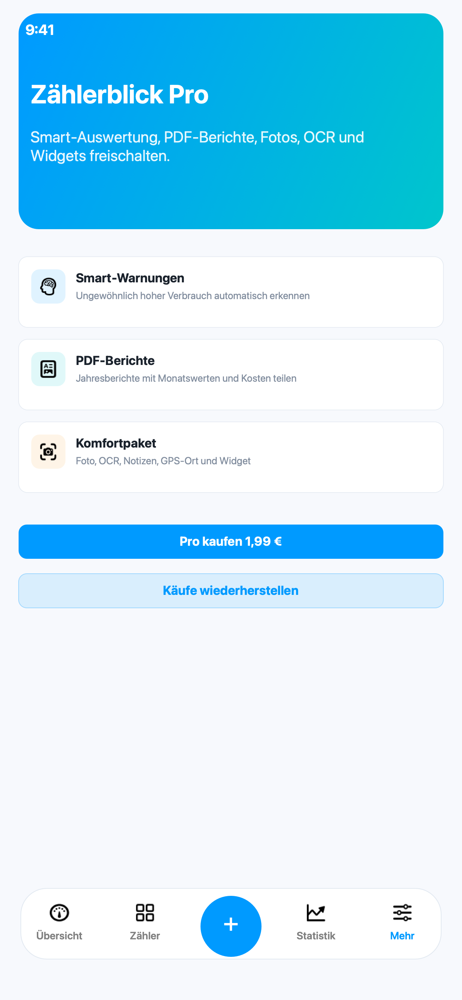

iPhone-App für Zählerstände
Zählerstände privat verwalten
Zählerblick hilft dir, Strom, Wasser, Gas, Fahrzeugstände und eigene Zähler lokal auf deinem Gerät zu erfassen, auszuwerten und als Bericht zu exportieren.


Auswertungen
Monatswerte, Kosten, Prognosen und Jahresvergleiche helfen beim Einordnen deiner Verbräuche.
Privat
Keine Werbung, kein Tracking und keine eigenen Server für deine Zählerdaten.
Export
CSV, Backup und PDF-Berichte bleiben unter deiner Kontrolle und werden nur geteilt, wenn du es auswählst.